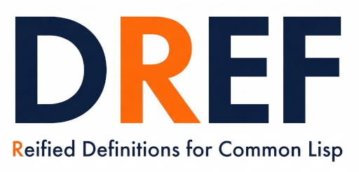

DRef Leaves Home
Tags: tech, lisp, Date: 2026-05-05
Version 0.5 of DRef, the definition reifier, is now available. It has moved to its own repository, completing its separation from PAX, where it was originally developed.

This was a long time coming. Twelve years ago today, PAX was born.
From the start, PAX used the concept of locatives to refer to
definitions without first-class objects. For example, to generate
documentation for the *MY-VAR* variable, one could use the
VARIABLE locative as in (*MY-VAR* VARIABLE). PAX needed to be able
to tell whether such a definition exists, as well as access its
docstring and source location.
Over time, this mechanism evolved into a portable, extensible introspection library independent of PAX. I began separating the two projects two years ago and named the new library, though they continued to share a repository. I have now removed the remaining dependencies so that DRef can live on its own.